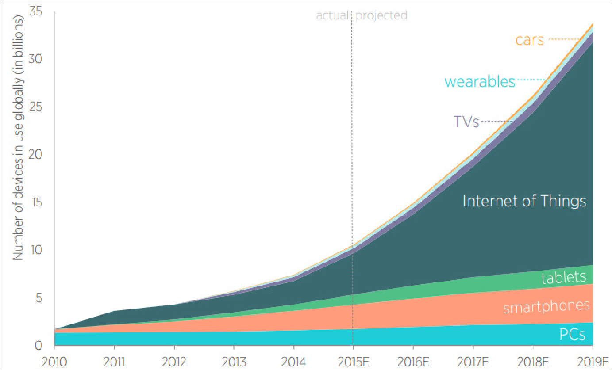
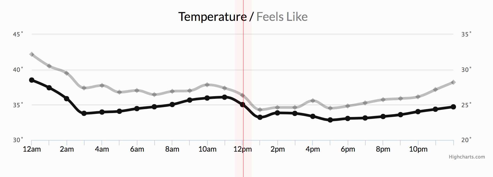
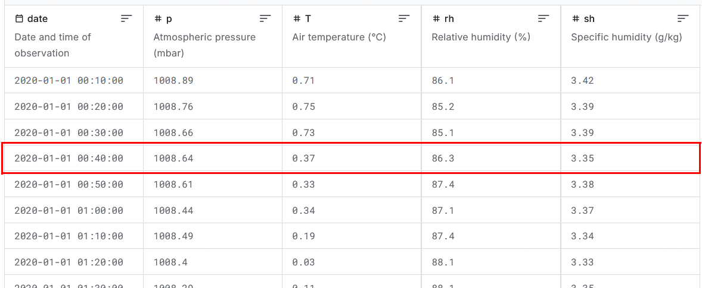
| Banco | Arquitetura | Destaque |
|---|---|---|
| Apache IoTDB 1.3 | TsFile colunar + Thrift RPC | Criado para IoT industrial (Tsinghua) |
| InfluxDB 2.7 | TSM (Time-Structured Merge Tree) + HTTP | Padrao de referencia na literatura |
| TimescaleDB (PG 15) | Hipertabelas sobre PostgreSQL + WAL | SQL completo + ecossistema relacional |
| Escala | Clientes | Dispositivos | Sensores | Dados totais |
|---|---|---|---|---|
| Pequena | 5 | 10 | 10 | ~50k pts |
| Media | 5 | 10 | 10 | ~250k pts |
| Grande | 10 | 50 | 20 | ~5M pts |
benchmark.py): orquestra todos os 27 testes com um unico comandogithub.com/LuizFerK/iot-benchrunner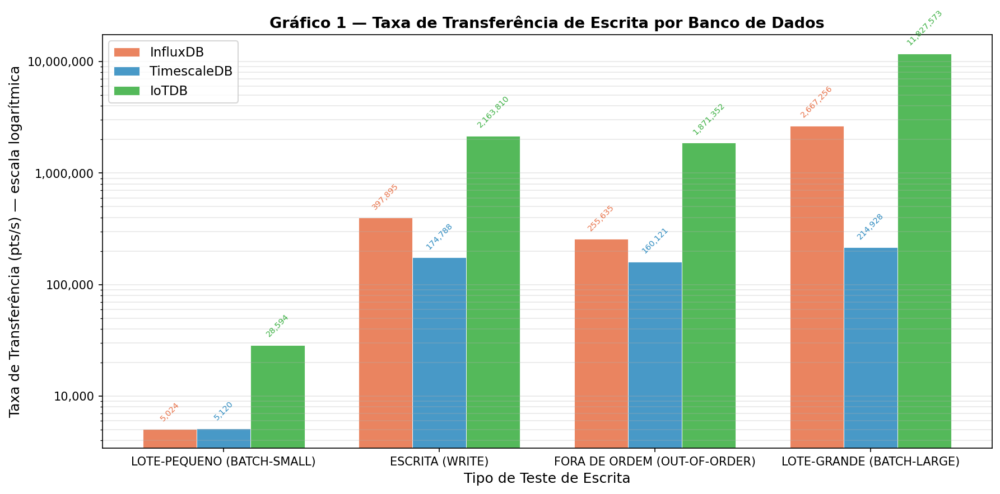
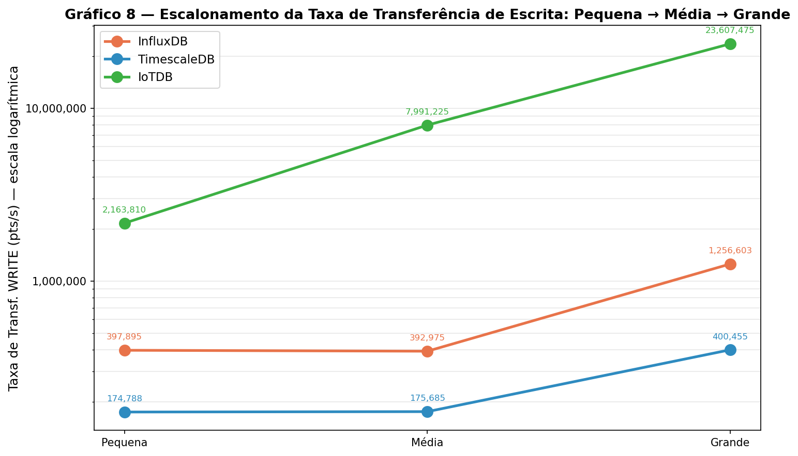
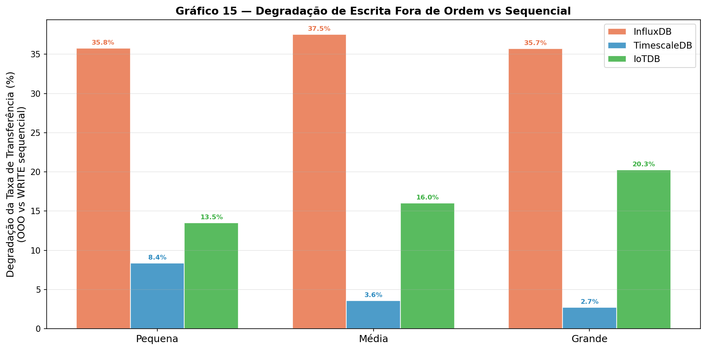
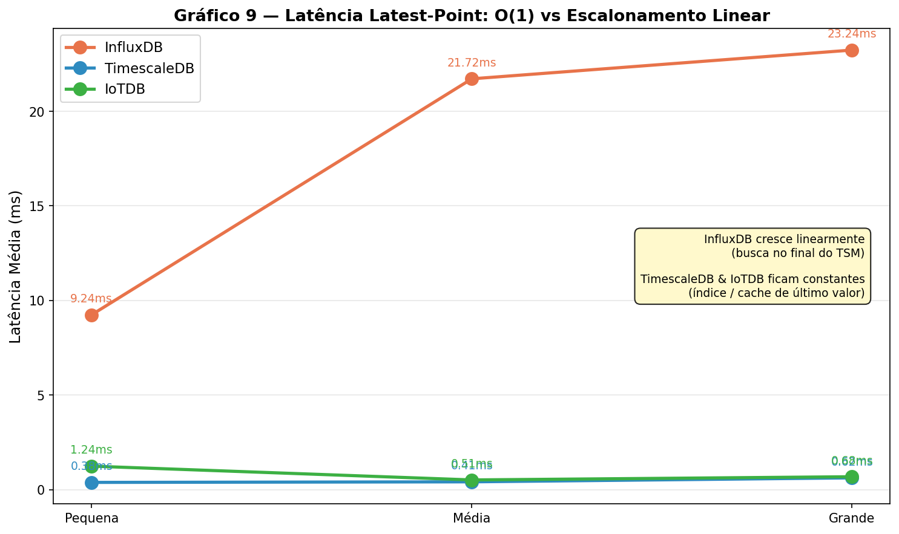
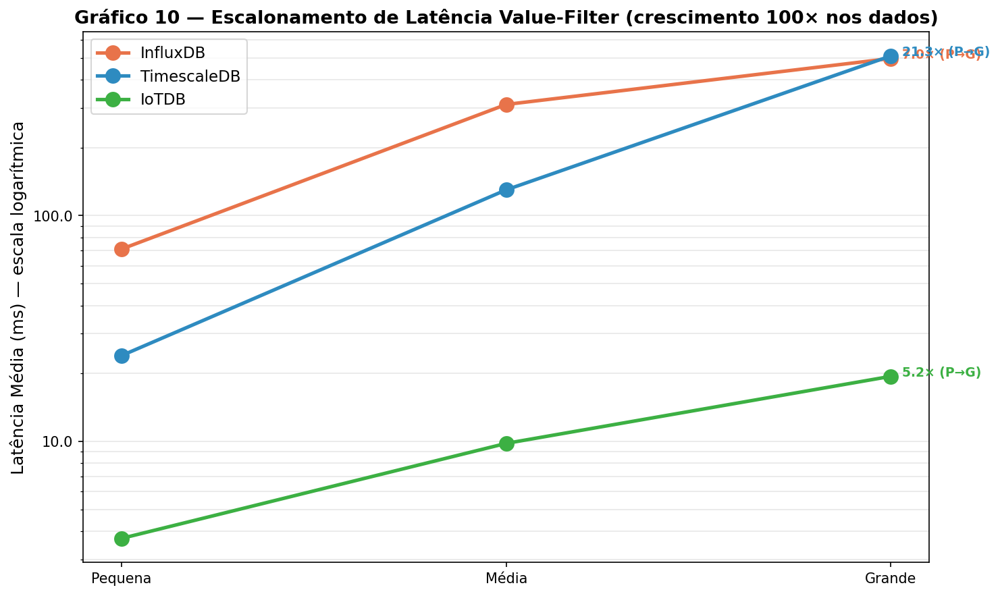
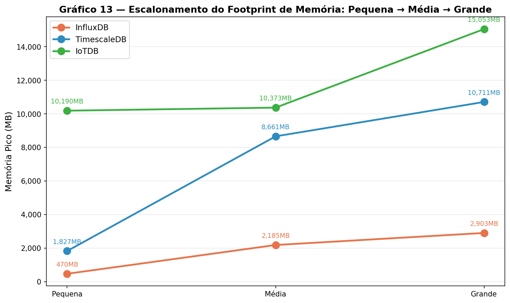
| Resultado inicial | Reexecucao isolada |
|---|---|
| Penalidade fora de ordem TimescaleDB (grande): 23% | 2,7% — artefato de despejo de cache |
| Saturacao de CPU TimescaleDB: 97,7% | 77,4% — competicao de CPU compartilhada |
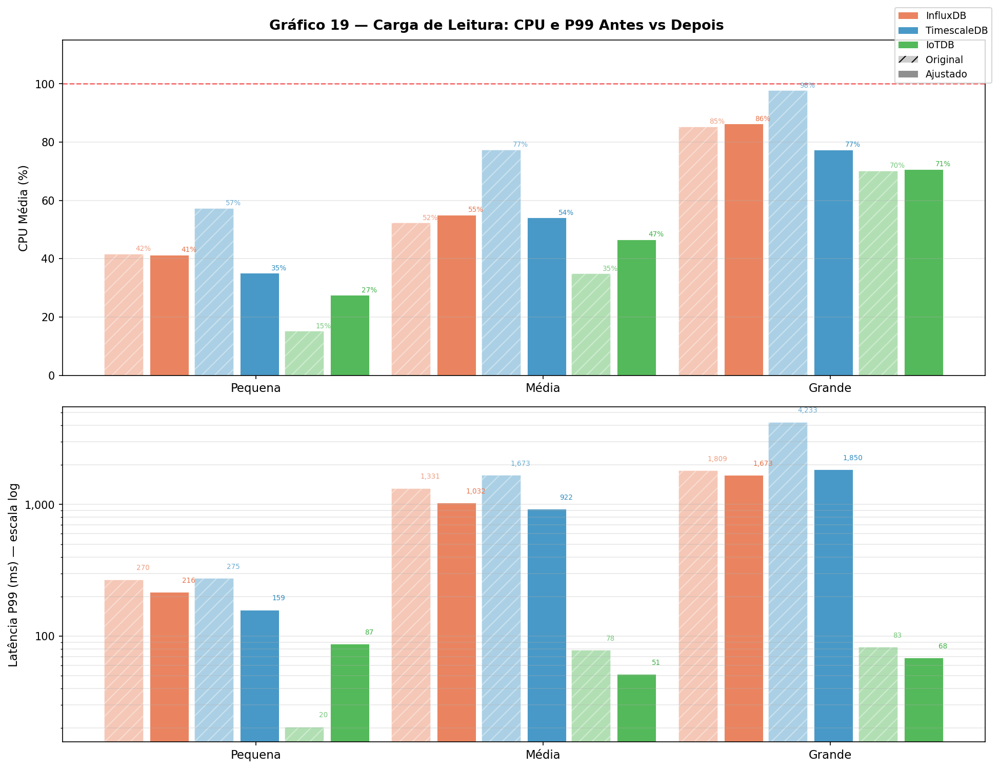
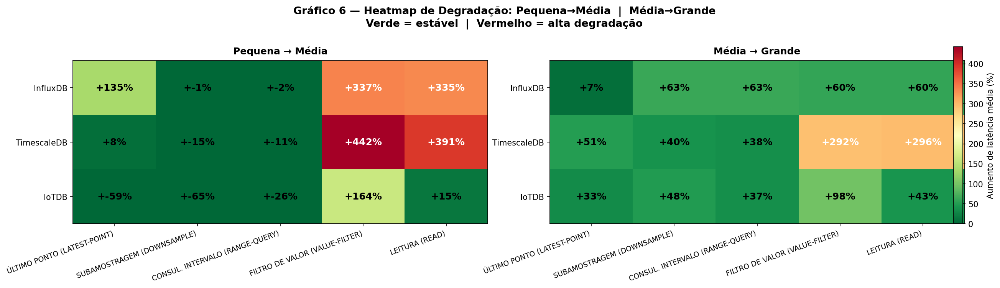
| Cenario | Banco recomendado |
|---|---|
| Pipeline IoT dominado por escrita com RAM suficiente | IoTDB |
| Analise com consultas de painel em janelas de tempo recentes | TimescaleDB |
| Alertas por limiar sobre historico crescente | IoTDB (filtro sublinear) |
| Carga mista, memoria restrita, volume moderado | InfluxDB |
| Necessidade de SQL, joins relacionais, ecossistema PostgreSQL | TimescaleDB |
github.com/LuizFerK/iot-benchrunner